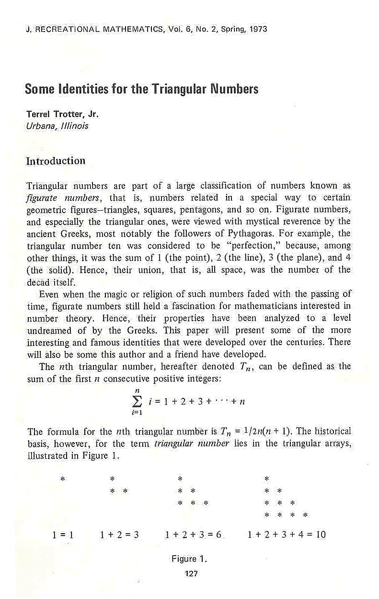
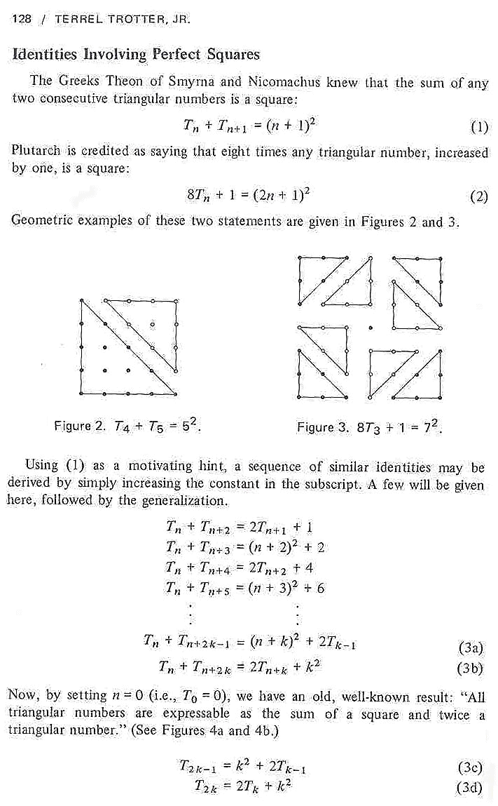
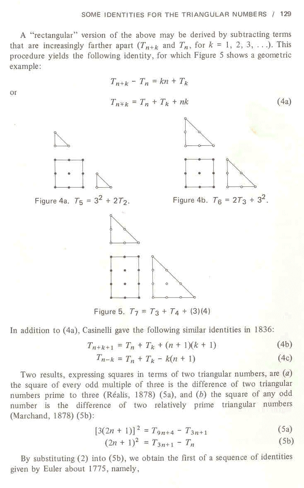
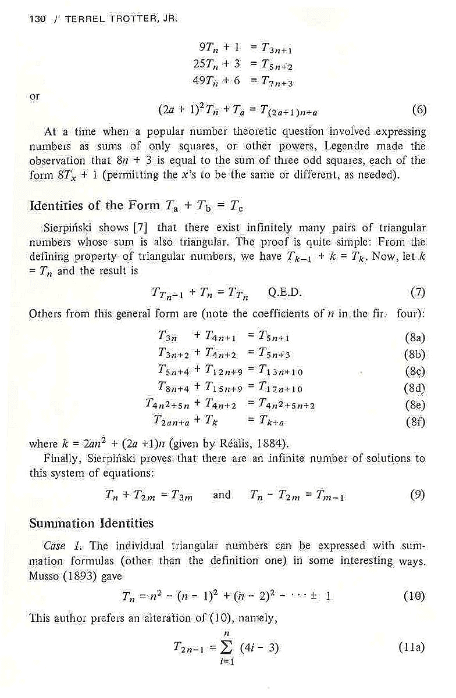
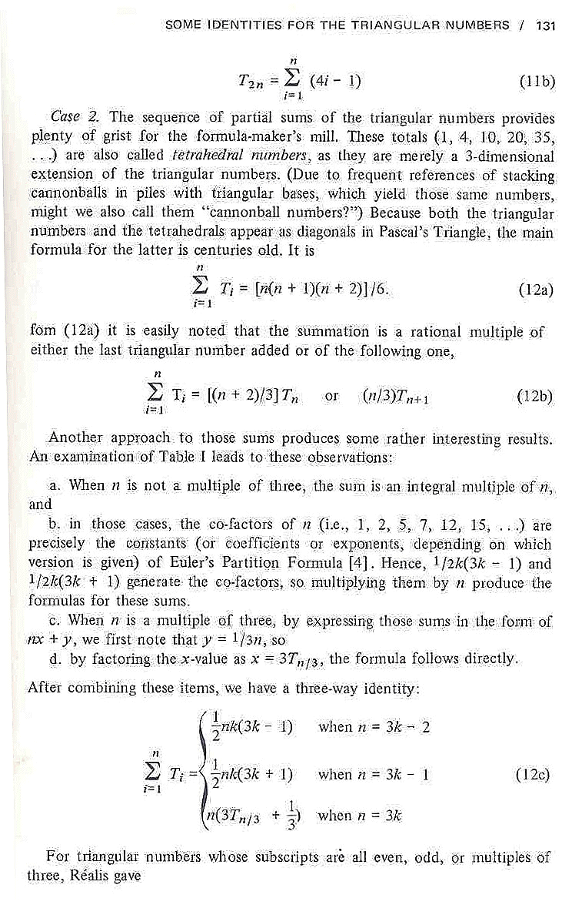
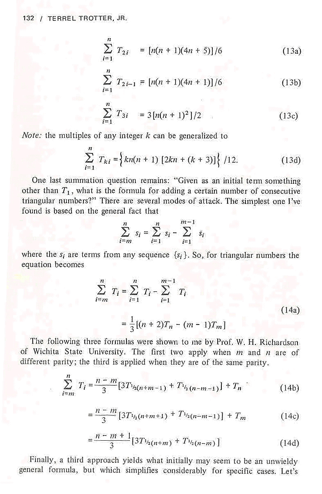
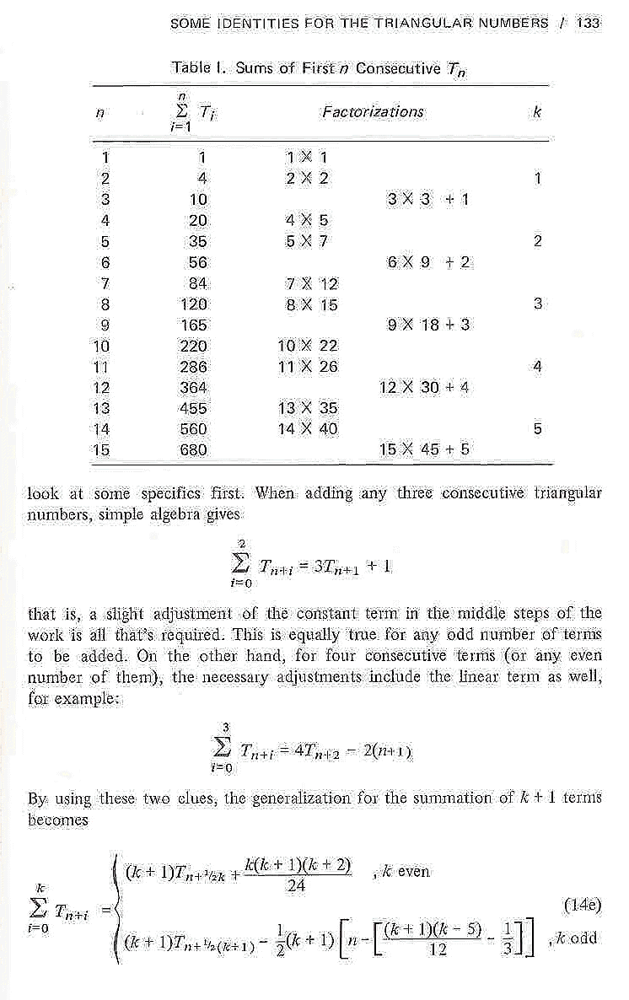
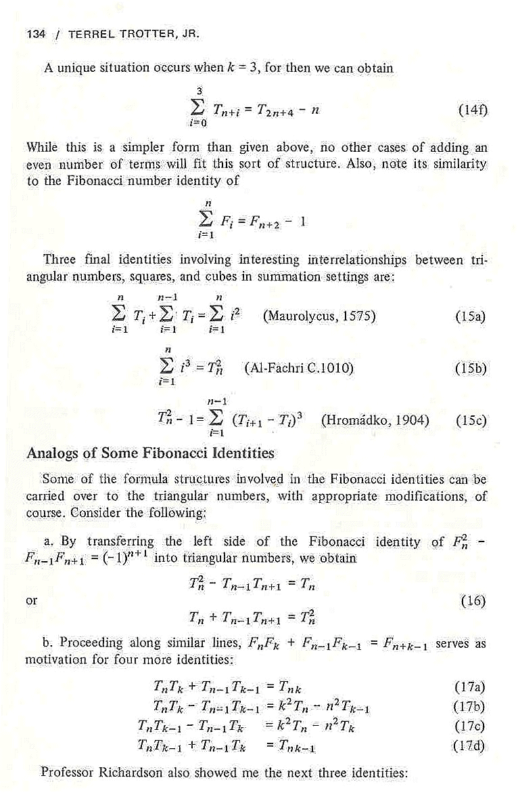
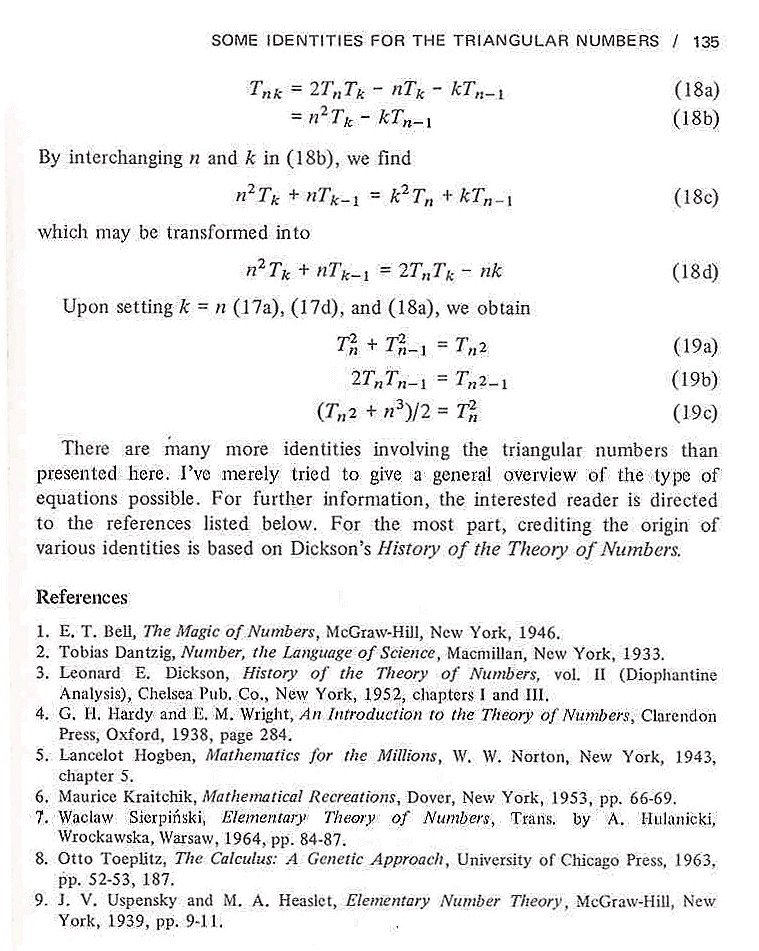

Triangular Numbers |
[NOTE: This is merely a scanned version of my article taken from the magazine. I'm sorry if it loads slowly into your browser; please be patient then. Thank you.] 








For more interesting information about this topic, I recommend this site by Kirby Urner.
| Comments? Send e-mail. | Back to top | Go back to Home Page | Go back to Contents |